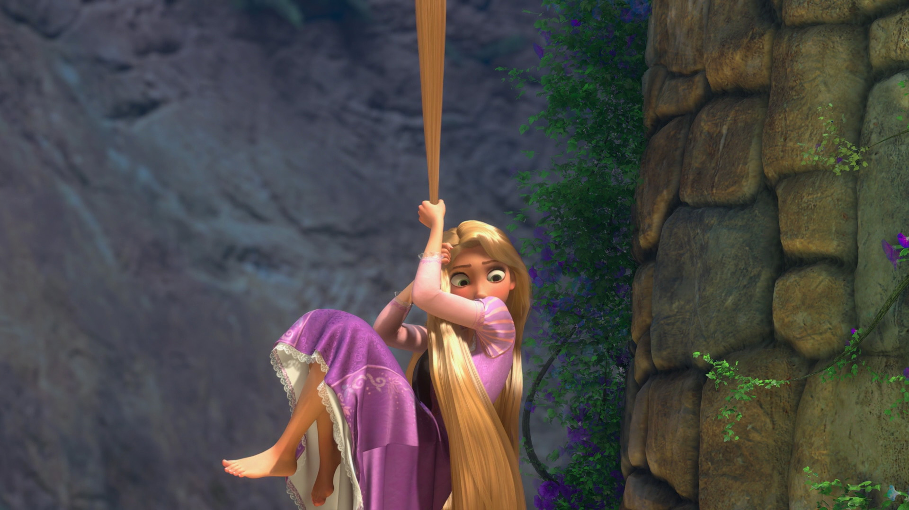
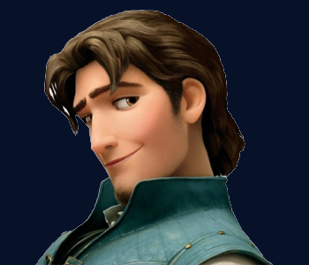

본문콘텐츠영역
Character
Main Character
-
Rapunzel
She is taught that the outside world is very dangerous and scary from Godel, a man who has been imprisoned in a high tower for the rest of his life and thinks of him as his mother. However, she is curious and lively by nature, so every birthday night she sees the lights rising from a distant kingdom and wants to go out to see them. Perhaps because he was living in captivity, She was very excited to see the outside world, but he was almost as happy as Ariel of the Little Mermaid who experienced the human world for the first time.Her personality is naive, daring, and quite talkative.
Flynn Riderhe was described as a handsome thief. Smolder, who always tries to maintain a relaxed and flirtatious attitude, and attracts women due to his sassy personality is his specialty. It seems to work for the other women, but it doesn't work for Rapunzel because Gothel has been brainwashing people outside of her since childhood. In fact, he was originally from an orphan whose real name was Eugene Fitzherbert. The pseudonym Flynn Rider is said to be derived from the name of the protagonist in a book he admired.
GothelGothel sneaks into the palace and kidnaps Rapunzel. After that, she was locked up in a tower and pretended to be a mother for 18 years, continuing to maintain her youthfulness with the power of her hair. she also teaches at the brainwashing level that it is very dangerous outside, and that people have sharp fangs to prevent Rapunzel from leaving her. So it was the teeth that Rapunzel knocked out Flynn and checked.

Sub character
-
Pascal
A loyal friend to Rapunzel. he is one of the driving forces in pushing Rapunzel.
-
Maximus
Maximus is brave, bold and not at all cowardly even being more feared than his captain.
-
Stabbington
her life in a tower, imagining the world outside. go on an adventure dream.
-
 Frederic
Frederic
He is the father of Rapunzel, the husband of Queen Arianna, and the king of Corona.